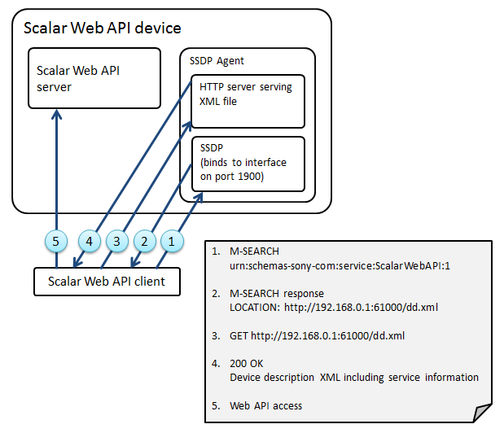

This high-level flow diagram will be used in the following discussion. Please note that the references to UPnP do not imply that an entire UPnP stack is required to support Scalar Web API. Only the SSDP portion of UPnP is required.
Support libraries are provided for Java/Android and iOS platform.
Scalar Web API – Discovery Flow:
NOTE: File name, IP address and port number except 1900 in the following figure are example value.

This document is only concerned with the portions of the requests and responses highlighted in Italic. The other portions in the following examples are subject to the UPnP specification.
To support IPv6, implement in accordance with the UPnP specification. The following specification is common in IPv4 and IPv6.
Devices supporting Scalar Web API are discovered via the SSDP M-SEARCH method, using a specific search target (ST) header:
ST: urn:schemas-sony-com:service:ScalarWebAPI:1
All multicast messages are sent to the reserved address and port 239.255.255.250:1900. Here is an example SSDP M-SEARCH for devices that support Scalar Web API:
M-SEARCH * HTTP/1.1 |
Devices that implement the service specified in the search target (ST) field (i.e. that implements Scalar Web API) will respond with a unicast response of the form:
HTTP/1.1 200 OK |
The value of the LOCATION header points to UPnP device description. The value of the ST header is identical to the header sent in the M-SEARCH request.
After receiving discovery response, clients should retrieve the device description (e.g. GET http://192.168.1.1:61000/dd.xml) and check if necessary Web API service is supported by the device.
Scalar Web API device has "X_ScalarWebAPI_DeviceInfo" tag in device description. Its name space is "urn:schemas-sony-com:av".
<av:X_ScalarWebAPI_DeviceInfo xmlns:av="urn:schemas-sony-com:av">
Provided service information is described by the following tags in X_ScalarWebAPI_DeviceInfo element.
Two formats are allowed inside this element. Format A is simple and smaller, and Format B can specify IP address for each service. A format can be chosen between them but can’t be mixed in a device description. Unless there is a special reason, Format A which is lightweight is recommended.
If client targets at both the formats, client needs to judge the format by the presence (Format-A) or absence(Format-B) of X_ScalarWebAPI_BaseURL tag.
Format A | |
Tag Name | Explanation |
X_ScalarWebAPI_Version | Scalar Web API spec version. Fixed to 1.0 in the current specification. |
X_ScalarWebAPI_BaseURL | URL to the root path of Web API. If this tag is contained, the description format is A. |
X_ScalarWebAPI_ServiceList | This element has all the provided service information. The information of each service is described by X_ScalarWebAPI_ServiceType tag. |
X_ScalarWebAPI_ServiceType | Provided service name. This tag is subelement of X_ScalarWebAPI_ServiceList. |
This is an example of device description format A.
<?xml version="1.0"?> |
Format B | |
Tag Name | Explanation |
X_ScalarWebAPI_Version | Scalar Web API spec version. Fixed to 1.0 in the current specification. |
X_ScalarWebAPI_ServiceList | This element has the all the provided service information. Each service is described by X_ScalarWebAPI_Service tag. |
X_ScalarWebAPI_Service | This element has service type and its service URL. |
X_ScalarWebAPI_ServiceType | Provided service name. This tag is subelement of X_ScalarWebAPI_Service |
X_ScalarWebAPI_ActionList_URL | Each service is set under this URL. |
This is an example of the device description format B. (X_ScalarWebAPI_DeviceInfo section)
<av:X_ScalarWebAPI_DeviceInfo xmlns:av="urn:schemas-sony-com:av"> |
If you want to add an optional information related with Scalar Web API to device description, you can add an own child tag to <av:X_ScalarWebAPI_DeviceInfo> tag.
<av:X_ScalarWebAPI_DeviceInfo xmlns:av="urn:schemas-sony-com:av"> |
Tag name | Explanation |
<av:X_Scalar_WebAPI_****> | Category for application defined information. Child tag of <av:X_ScalarWebAPI_DeviceInfo> tag. Optional information is described in the child tag of this tag. |
<av:X_????> | Application defined information. You can define any name which starts with av:X_. |
The following tag name is the list of option tag name currently defined and used.
ScalarWebAPI_**** | Explanation |
ImagingDevice | For imaging device. |